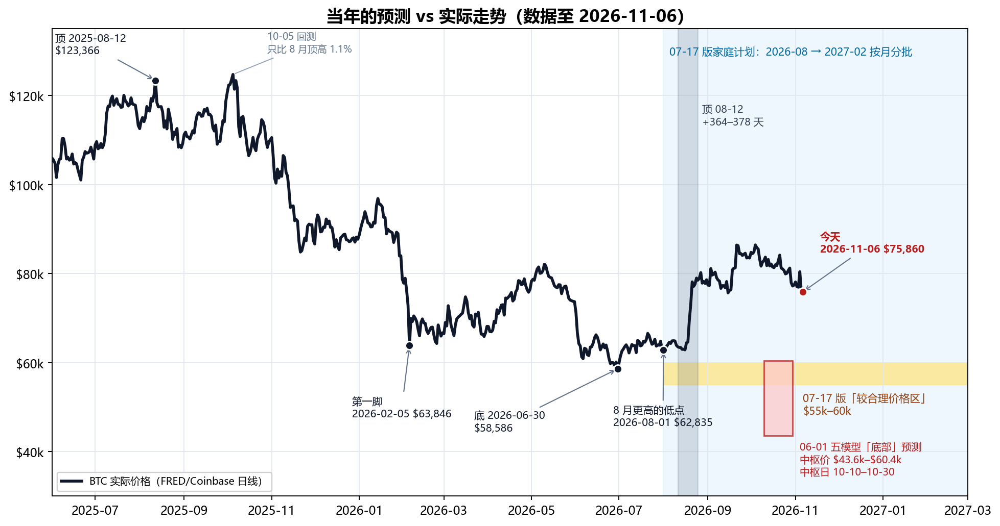
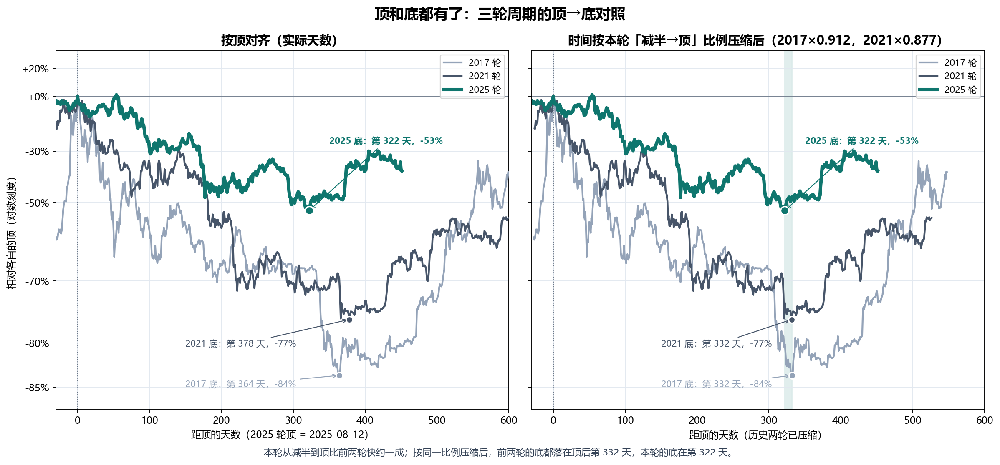
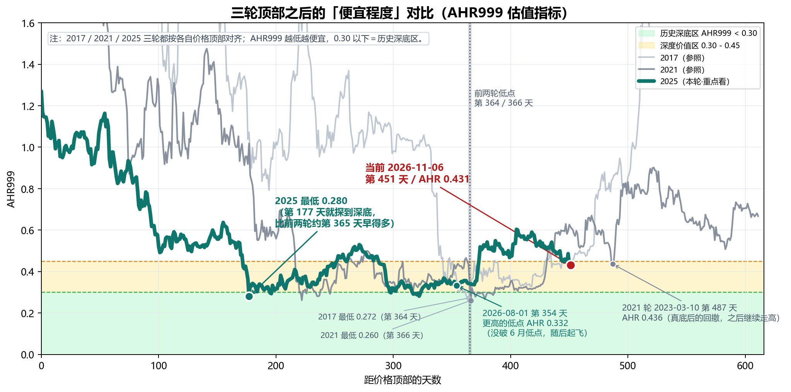
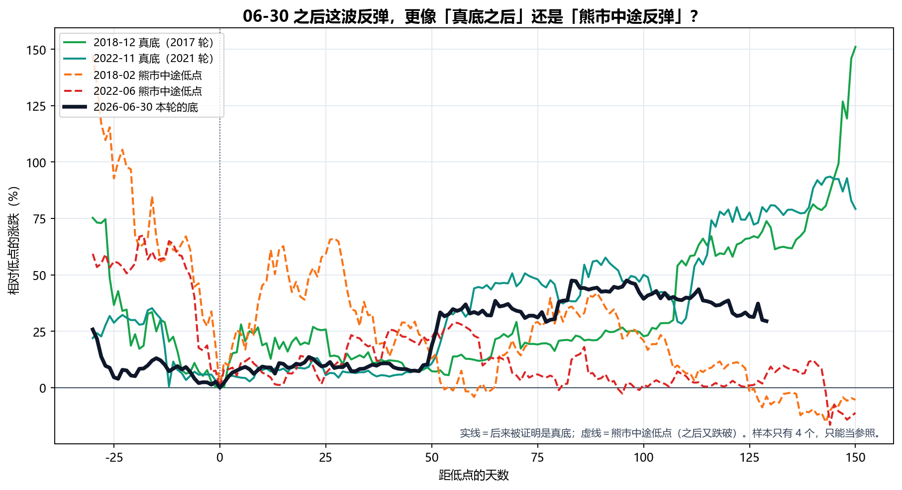
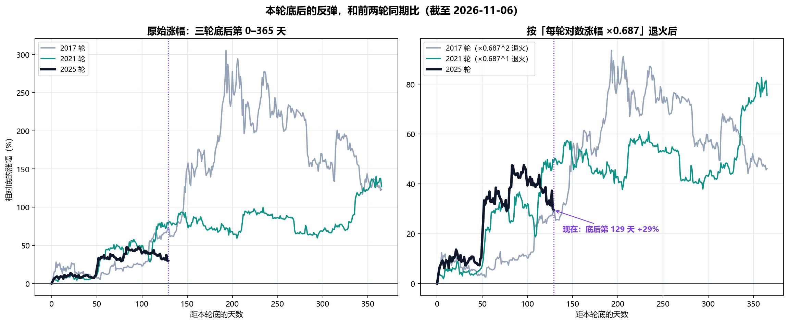
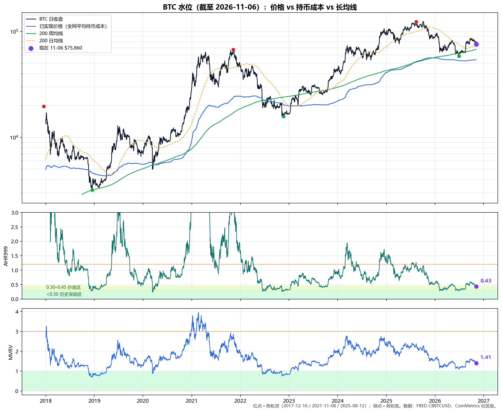
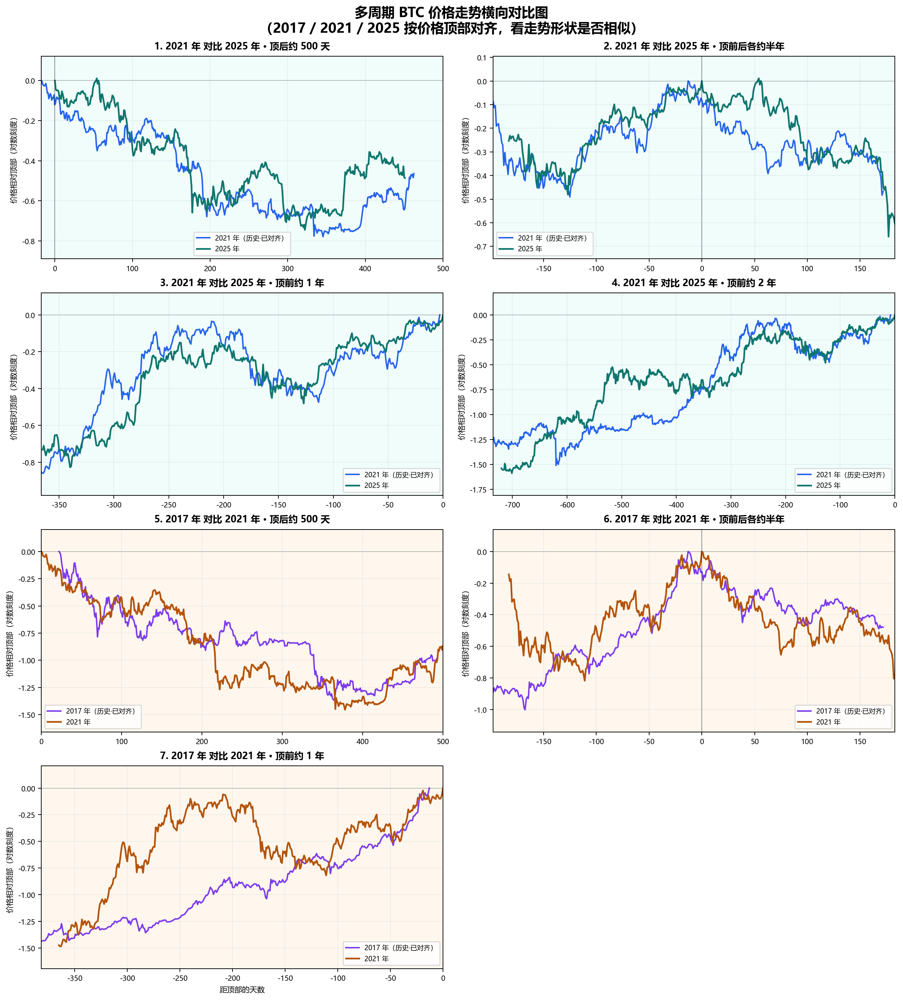
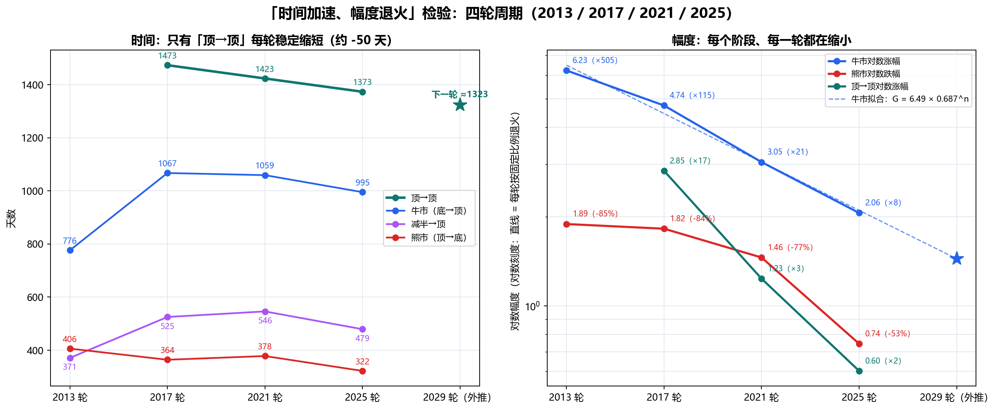
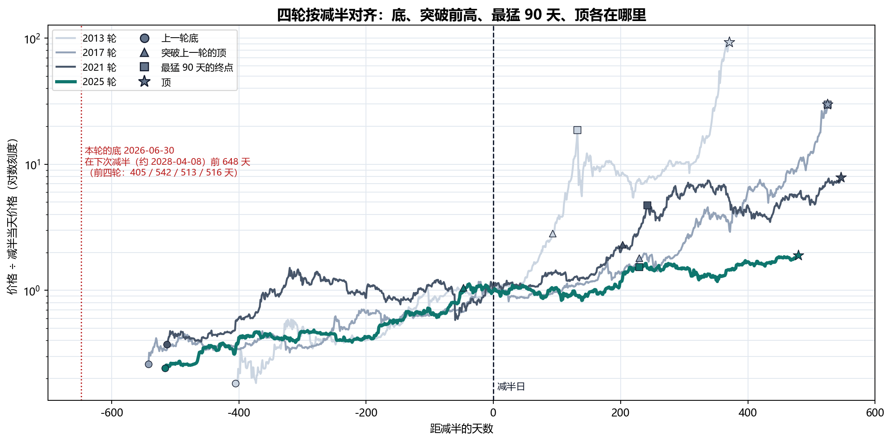
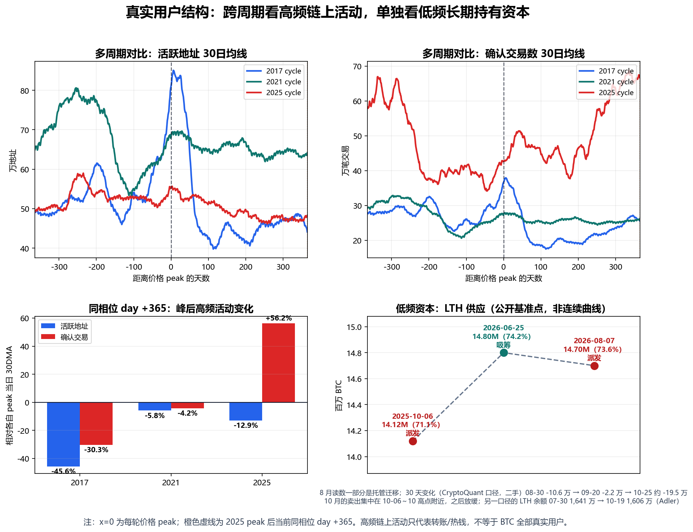

生成日期：2026-11-07（数据截至 2026-11-06 收盘） ｜ 2026 年 11 月 · 家庭内部讨论稿 ｜ 上一版：2026-10-01（原文件原样保留，未改动）
目的：11 月第四笔买入到期；同时 BTC 从 10-04 的高点回落了 12%，AHR999 回到 0.45 以下。用 11-06 的最新价格把全部计算重新抓取、重新计算、重新出图。口径不变：本轮的顶 = 2025-08-12（$123,366），本轮的底 = 2026-06-30（$58,586）。
本次更新一句话：BTC 从 10-04 的 $86,424（底以来最高）回落到 11-06 的 $75,860，33 天跌了 12.2%；同期纳斯达克 100 跌了 13.6%，这次主要是跟着美股一起跌（§6）。AHR999 从 0.557 降到 0.431，回到「深度价值区」（0.30–0.45）；按四个估值指标的全部历史看，现在比约八成的日子便宜，但还不是 6 月那种深底。这次回撤的大小，和前两轮真底之后第一年里的回撤差不多（2023 年有三次 -18% 到 -20%，2019 年有 -18% 和 -13%），两轮都没有跌破底；本轮要再跌 22.8% 才会破底。需要如实说的是：底之后的反弹比前两轮弱——见底后第 129 天，前两轮涨了 74%、78%，本轮只有 29.5%；按「每轮幅度退火」折算，本轮落在退火路径的下沿（§3）。谁在卖这一面变差了：美国现货 ETF 从买盘变成卖盘（10 月净流出约 $5 亿，11 月头五天又流出约 $12.8 亿），长期持有者 30 天净减少约 19.5 万枚（二手数据），按 10-01 版 §10 事先定好的规则，这是红灯。家庭计划：11 月这一笔先暂停；原因是这条红灯，不是价格（按价格，今天在「深度价值区」）。后面几笔下一版复查再定。下一个顶的推算（2029 年，$16–25 万）没有变（§5）。
| 项目 | 10-01 版 | 11-06 版 |
|---|---|---|
| 最新价格 | $83,788（10-01 当日盘中；FRED 事后修订为收盘 $84,760） | $75,860（11-06 收盘） |
| 底以来最高 | $86,397（09-21） | $86,424（10-04），之后 33 天回落 -12.2% |
| 10 月 | — | 均价 $82,115；全月 -7.3%；最低 $77,191（10-30） |
| 相对顶（08-12） | -32.1% | -38.5% |
| 相对底（06-30） | +43% | +29.5%；要跌破底需再跌 22.8% |
| 顶后 / 底后天数 | 415 / 93 | 451 / 129 |
| AHR999 | 0.557（定投区 0.45–1.2） | 0.431（深度价值区 0.30–0.45）；10-30 起回到 0.45 附近及以下 |
| MVRV（本版新增） | — | 1.405；全网平均持币成本（已实现价格）$53,954，价格比它高 40.6% |
| 四项估值指标的全历史分位 | — | 约 21%（越低越便宜；§3.5） |
| 恐惧与贪婪指数 | 74（贪婪） | 28（恐惧）；11-07 为 25（极度恐惧） |
| 美国现货 BTC ETF | 9 月净流入约 +$26.5 亿；持币约 129.2 万枚 | 10 月净流出 -$5.15 亿；11-02 ～ 06 五天 -$12.8 亿；持币约 127.8 万枚（11-05） |
| 长期持有者 | 30 天变化 -2.2 万 BTC（09-20）；🟡 黄灯 | 30 天变化约 -19.5 万 BTC（截至 10-25，二手），同期价格在跌 → 🔴 按 §10 规则是红灯 |
| 美联储 | 9 月加息后表示年内可能再加 | 10-28 维持 3.75%–4.00%（两票主张加息）；12 月加息概率 76.8%（11-06） |
| 大事件 | — | 10-29 Binance 被盗约 $63 亿（史上最大）；11-03 中期选举民主党拿下国会；11-05 美股大跌 |
| 家庭计划 | 10 月照常买 | 11 月这一笔暂停（§10 红灯）；后面几笔下一版复查 |
| 美国 10 年期国债收益率 | 5.26%（09-29） | 10-05 升到 5.31% 后回落，11-05 4.84% |
| 美股 | — | 纳斯达克 100 从 10-06 高点跌 13.6%（11-05 单日 -6.4%）；10 月以来 BTC 和纳指 100 的日涨跌相关系数 0.69 |
| 下一个顶 | 2029 年；$16.3 万–$24.8 万 | 不变。只有下次减半的推算从 2028-04-10 提前到 2028-04-08，减半时钟相应提前 2–4 天（§5） |
数据说明：本版只有一处历史数据被修订——10-01 当日收盘，从 10-01 版用的盘中价 $83,788 修订为 FRED 正式收盘 $84,760；修订后 10-04 的收盘 $86,424 比 09-21 的 $86,397 略高，成为底以来最高。其余历史数据与 10-01 版相同。所有价格都是日收盘价；数据文件末尾有一个 Yahoo 的 11-07 盘中点（约 $75,750），本版报告的数字一律截到 11-06 收盘，不用这个点（§2–§4 的个别流程图和 §12 提到的 stepA–D 输出会画到这一点）。
下图把我们 6 月、7 月做过的主要预测和后来的真实走势画在一起：黄色带是 7 月版家庭计划说的「较合理价格区 $55k–60k」，红框是 6 月五个模型给的「底部」，灰色竖带是「顶 08-12 + 前两轮顶→底天数（364–378 天）」的时间窗。

| 当年的计算 | 当时的结论 | 实际（截至 2026-11-06） | 对/错 |
|---|---|---|---|
| 减半→顶 536 天（2017/2021 两轮平均） | 本轮顶约 2025-10-08 | 顶在 2025-08-12（减半后 479 天） | ❌ 早了 57 天：本轮整体快约一成（§2） |
| 06-01 五模型：底部价格 | 中枢 $43,611–$60,385；共识中位 $57,626 | 底 $58,586（2026-06-30），比共识中位只高 1.7% | ✅ 对 |
| 06-01 五模型：底部时间 | 中枢 2026-10-10 ~ 10-30 | 底在 06-30，早了 3–4 个月 | ❌ 错 |
| AHR999 深底 0.26–0.28 | 本轮也会探到这一带 | 2026-02-05 0.280；2026-06-30 0.281 | ✅ 对 |
| 顶 08-12 + 前两轮顶→底天数（364–378 天） | 2026-08-11 ~ 08-25 附近是时间底 | 这段时间只有更高的低点（08-01 $62,835、08-16 $62,859）；真正的底在顶后第 322 天（06-30），早了 42–56 天 | ⚠️ 半对：方向对，时间早了 6–8 周 |
| 退火模型：顶后跌 28%–44% | 本轮跌幅会比前两轮浅很多 | 顶→底 -52.5%，比模型最深的 -44% 还深约 8 个百分点 | ⚠️ 半对：浅是对的，但浅得不够 |
| stepD12 价格区间 | $29k–$57k，中枢 $39k | 底 $58,586 | ❌ 太悲观 |
| 07-17 家庭计划「55–60k 较合理价格区」 | 2026-08 → 2027-02 窗口里大概率能在这一带买 | 底在窗口开始前（06-30）；窗口内最低 $62,835（08-01） | ❌ 错（09-22 版已作废这句话） |
| 「W 底」（2 月第一脚 → 6 月第二脚） | 第二脚后反弹 | 06-30 后最高 +47.5%（10-04），现在 +29.5% | ✅ 对 |
| 「真正时间底大概率在 8–10 月」 | 8–10 月还会再跌回来 | 8–10 月都没再跌回去（9 月最低 $75,656，10 月最低 $77,191） | ❌ 错 |
| 长期持有者「刚从派发切到吸筹」 | 支持买入的证据之一 | 8 月上涨后转回派发；10-01 版评为黄灯；10 月的 30 天变化约 -19.5 万 BTC（二手），同期价格在跌（§6.2） | ❌ 变了：按 §10 规则是红灯 |
| 10-01 版：「06-30 的 $58,586 就是本轮的底」 | 跌破才需要重算 | 至今没有跌破；11-06 比底 +29.5% | ⏳ 暂时成立（还没被真正检验） |
| 10-01 版：「底之后的上涨不是直线，短期回落是正常的」 | 2023 年真底之后一年里有三次 18%–20% 的回撤 | 10-04 → 11-06 回撤 -12.2%，AHR 回到 0.45 以下 | ✅ 对（回撤还在进行） |
怎么读这张表：前面十行的判断和 10-01 版相同（「W 底」「8–10 月」两行更新了数字）——价格判断基本对，时间判断错了，而且错在同一个方向：整个周期比前两轮快了约一成。第十一行（长期持有者）从黄灯变成了红灯。最后两行是 10-01 版自己的判断：「底已经过去」到今天还成立，「底之后会有回撤」已经发生。
诚实提示：可对比的成熟周期只有 2017、2021 两轮。任何一条「对了」都不能当成规律被证实，「错了」也不能说明模型全废。这正是坚持「按月分批、不赌某一天」的原因。
顶和底都没有变，下表用 11-06 的数据重新计算，结果和 10-01 版完全相同。
| 周期 | 顶 | 底 | 减半→顶 | 顶→底 | 顶→底跌幅 | 减半→底 | 上轮底→本轮底 |
|---|---|---|---|---|---|---|---|
| 2017 轮 | 2017-12-16 $19,650 | 2018-12-15 $3,183 | 525 天 | 364 天 | -83.8% | 889 天 | 1,431 天 |
| 2021 轮 | 2021-11-08 $67,510 | 2022-11-21 $15,756 | 546 天 | 378 天 | -76.7% | 924 天 | 1,437 天 |
| 2025 轮 | 2025-08-12 $123,366 | 2026-06-30 $58,586 | 479 天 | 322 天 | -52.5% | 801 天 | 1,317 天 |
| 2025 ÷ 2017 | 0.91 | 0.88 | — | 0.90 | 0.92 | ||
| 2025 ÷ 2021 | 0.88 | 0.85 | — | 0.87 | 0.92 |

读法（同 10-01 版）：本轮每一段都比前两轮短约一成（0.85–0.92）；把前两轮的顶→底天数按本轮「减半→顶」的比例缩短，两轮都指向顶后第 332 天，实际的底在第 322 天，只差 10 天；跌幅一轮比一轮浅（-83.8% → -76.7% → -52.5%）。样本只有两轮，这些比例不能当定律。

| 周期 | 价格顶部 | 日期 | 距顶部天数 | AHR999 | 含义 |
|---|---|---|---|---|---|
| 2017 顶后低点 | 2017-12-16 | 2018-12-15 | 第 364 天 | 0.272 | 历史深底区 |
| 2021 顶后低点 | 2021-11-08 | 2022-11-09 | 第 366 天 | 0.260 | 历史深底区 |
| 2021 轮底后的回撤 | 2021-11-08 | 2023-03-10 | 第 487 天 | 0.436 | 真底之后的回撤（硅谷银行事件），之后继续走高 |
| 2025 第一脚 | 2025-08-12 | 2026-02-05 | 第 177 天 | 0.280 | 本轮 AHR 最低（价格 $63,846） |
| 2025 底 | 2025-08-12 | 2026-06-30 | 第 322 天 | 0.281 | 本轮的价格底（$58,586） |
| 2025 8 月低点 | 2025-08-12 | 2026-08-16 | 第 369 天 | 0.336 | 底之后的更高低点 |
| 2025 底后高点 | 2025-08-12 | 2026-10-04 | 第 418 天 | 0.590 | 底以来最高（$86,424） |
| 10 月底 | 2025-08-12 | 2026-10-30 | 第 444 天 | 0.450 | 9 月以来第一次回到 0.45 |
| 当前 | 2025-08-12 | 2026-11-06 | 第 451 天 | 0.431 | 回到「深度价值区」0.30–0.45 |
把 AHR999 换算成今天的价格（按 11-06 的 200 日几何均线 $72,712 精确反算）：
| AHR999 | 含义 | 今天大约对应的 BTC 价格 |
|---|---|---|
| 0.30 | 历史深底区上沿 | 约 $63,200 |
| 0.431 | 今天 | $75,860 |
| 0.45 | 深度价值区上沿 | 约 $77,500 |
| 1.20 | 定投区上沿 / 偏热区起点 | 约 $126,700 |
和 10-01 版（约 $61.4k / $75.3k / $123.1k）相比，三条线都上移了约 $1.8k–3.6k，因为 200 日均线还在上升（10-01 约 $70,926 → 11-06 约 $72,712）。意思是：同样的价格，随着时间推移会越来越「便宜」。今天的价格回到了「深度价值区」，但离「历史深底」（约 $63k 以下）还有 17%。
有一个巧合值得一提：2021 轮在顶后第 487 天（2023-03-10，硅谷银行事件那次回撤）AHR 也回到过 0.436，和今天的 0.431 几乎一样；那一次是真底之后的回撤，之后继续走高。只有一个样本，只能当参照。
方法和 10-01 版相同：把前两轮「后来被证明是真底」的低点，和「熊市中途、之后又被跌破」的低点，都对齐到第 0 天。

| 情形 | 低点日期 | 低点价格 | 低点后 150 天内最大涨幅 | 低点后第 129 天涨幅 | 之后有没有跌破这个低点 |
|---|---|---|---|---|---|
| 2018-12 真底（2017 轮） | 2018-12-15 | $3,183 | +151% | +74% | 没有（之后最低 $3,195） |
| 2022-11 真底（2021 轮） | 2022-11-21 | $15,756 | +94% | +78% | 没有（之后最低 $16,194） |
| 2018-02 熊市中途低点 | 2018-02-05 | $6,905 | +66% | -4% | 有（后来跌到 $3,183） |
| 2022-06 熊市中途低点 | 2022-06-18 | $18,989 | +29% | +6% | 有（后来跌到 $15,756） |
| 2026-06-30 本轮的底 | 2026-06-30 | $58,586 | +47.5%（进行中） | +29.5% | 至今没有 |
10-01 版（第 93 天）时，本轮 +43%，紧跟 2022-11 那次真底。到第 129 天，情况变了：前两轮真底在这一段继续上涨（+74%、+78%），本轮回落到 +29.5%，落在「真底」和「熊市中途低点」两组之间。只看这张图，已经分不出本轮更像哪一组。
我们的中心思想是「每一轮幅度退火」：四轮拟合，牛市的对数涨幅每轮乘以约 0.687（§5.2）。如果把前两轮底后的涨幅也按这个系数缩小（2017 轮缩两次、2021 轮缩一次），再和本轮比：

| 底后第 129 天 | 原始涨幅 | 退火后的涨幅 | 退火后对应的今天价格 |
|---|---|---|---|
| 2017 轮（×0.687 两次） | +73.8% | +29.8% | 约 $76,100 |
| 2021 轮（×0.687 一次） | +77.9% | +48.6% | 约 $87,000 |
| 本轮实际 | +29.5% | — | $75,860 |
读法：按退火后的标准，本轮 10 月初（底后约 100 天）还走在两条退火线的上面；这次回撤把它拉回到 2017 轮退火线上（几乎重合），比 2021 轮退火线低约 13%。所以「反弹弱」有两种解释：一是本轮的退火比 0.687 更厉害（第 5 节的价格推算会偏高）；二是只是节奏不同，前两轮在这个阶段之后也都有过几个月的停顿。现在分不出来，以后看这条线怎么走。
| 周期 | 底后一年内超过 12% 的回撤（从阶段高点算） | 一年内有没有跌破底 |
|---|---|---|
| 2017 轮（底 2018-12-15） | 2018-12-20 → 2019-02-07 -17.6%（49 天）；2019-05-27 → 06-09 -13.2%（13 天）；2019-06-26 → 11-24 -46.5%（151 天，发生在一波 4 倍上涨之后） | 没有 |
| 2021 轮（底 2022-11-21） | 2023-02-20 → 03-10 -18.6%（18 天）；2023-04-14 → 06-14 -17.7%（61 天）；2023-07-13 → 09-11 -20.0%（60 天） | 没有 |
| 本轮（底 2026-06-30） | 2026-10-04 → 11-06 -12.2%（33 天，还在进行） | 至今没有 |
本轮底以来的低点：06-30 $58,586 → 08-01 $62,835 → 08-16 $62,859 → 09-15 $75,656 → 10-30 $77,191 → 11-06 $75,860。11-06 收盘低于 10-30 的低点，「低点一个比一个高」的结构被打破了一次；离 9 月的低点 $75,656 只差 0.3%，离 8 月的低点（$62.8k）还很远。
历史基准率（只是统计，不是预测）：
| 起点 | 60 天内再跌 15% 以上 | 60 天内跌破本轮底（需再跌 22.8%） | 120 天内跌破本轮底 |
|---|---|---|---|
| 2015 年以来所有交易日（不分牛熊） | 35.8% | 20.2% | 31.5% |
| 只看前两轮「底后 90–365 天」这一段 | 28.4% | 13.0% | 26.6% |
（第二行的「再跌 22.8%」在前两轮这一段里确实发生过——主要是 2019 年下半年那次 -46.5%——但两轮都没有跌破各自的底。）
除了 AHR999，本版加了三个独立的估值尺子：MVRV（市值 ÷ 全网持币成本）、价格 ÷ 200 周均线、价格 ÷ 2 年均线。数据来自 CoinMetrics 社区版和我们自己的价格数据。

| 时点 | 价格 | AHR999 | MVRV | 价格 ÷ 200 周均线 | 恐惧与贪婪 |
|---|---|---|---|---|---|
| 现在（2026-11-06） | $75,860 | 0.431 | 1.405 | 1.12 | 28 |
| 本轮顶（2025-08-12） | $123,366 | 1.270 | 2.32 | 2.40 | 68 |
| 本轮底（2026-06-30） | $58,586 | 0.281 | 1.10 | 0.94 | 15 |
| 底后高点（2026-10-04） | $86,424 | 0.590 | 1.61 | 1.31 | 65 |
| 2021 轮底（2022-11-21） | $15,756 | 0.267 | 0.78 | 0.66 | 21 |
| 2021 轮底后同一天（2023-03-30） | $28,037 | 0.798 | 1.42 | 1.10 | 60 |
| 2017 轮底（2018-12-15） | $3,183 | 0.272 | 0.69 | 1.00 | 11 |
| 2017 轮底后同一天（2019-04-23） | $5,533 | 0.946 | 1.26 | 1.57 | 68 |
全历史分位（现在比百分之几的日子更贵；越低越便宜）：AHR999 13%（2015 年起）、MVRV 32%（2013 年起）、价格 ÷ 200 周均线 20%、价格 ÷ 2 年均线 20%；四项平均约 21%。
读法：
下方的参考价位（由近到远）：200 日均线 $73,190、200 日几何均线 $72,712、200 周均线 $67,630、MVRV 1.2 约 $64,700、AHR 0.30 约 $63,200、8 月更高的低点 $62,835、本轮底 $58,586、全网持币成本 $53,954。

第 1 格（2021 对比 2025·顶后约 500 天，2021 轮已按幅度缩放）多了 36 天：
| 看什么 | 11-06 版的读法 |
|---|---|
| 顶后跌幅形状 | 前 350 天和 2021 轮高度重合（同 10-01 版） |
| 起飞时间 | 本轮在顶后第 374 天从底涨超 25%，比 2021 模板早约 2 个月（同 10-01 版） |
| 最近一个月 | 本轮从第 418 天（10-04）开始回落，重新靠近缩放后的 2021 轮同期位置；10 月初领先的那一段基本还回去了 |
我们这套研究的中心思想：每一轮周期，时间走得更快（加速），涨跌幅度越来越小（退火）。本节和 10-01 版一样，用有完整数据的四轮（2013、2017、2021、2025）检验，再推下一个顶。2015 年以前的价格用 Bitstamp 交易所的日收盘价。本版用 11-06 数据重跑了全部拟合：四轮的锚点都没变，所以各阶段比例、两条公式、价格推算和 10-01 版完全相同；只有「下次减半」按最新区块高度推算提前了 2 天（2028-04-10 → 04-08），和减半有关的几个日期相应提前 2–4 天。

相邻两轮的比例（小于 1 = 时间变短 / 幅度变小）：
| 阶段 | 2013→2017 | 2017→2021 | 2021→2025 |
|---|---|---|---|
| 牛市（底→顶）时间 | 1.375 | 0.993 | 0.940 |
| 熊市（顶→底）时间 | 0.897 | 1.038 | 0.852 |
| 顶→顶时间 | — | 0.966 | 0.965 |
| 牛市对数涨幅 | 0.762 | 0.644 | 0.674 |
| 熊市对数跌幅 | 0.964 | 0.799 | 0.512 |
| 规律 | 公式 | 拟合情况 | 推到下一轮 |
|---|---|---|---|
| 时间：顶→顶天数 | 1,473 − 50 × n（n = 0 为 2013→2017） | 三个间隔正好在一条直线上 | 1,323 天 → 2029-03-27 |
| 幅度：牛市对数涨幅 | 6.49 × 0.687ⁿ（n = 0 为 2013 轮） | 四轮对数 R² = 0.99 | 从底涨约 4.2 倍 → $58,586 × 4.2 ≈ $24.8 万 |
| 时间算法 | 下一个顶 |
|---|---|
| 顶→顶每轮少 50 天 | 2029-03-27 |
| 顶→顶按比例缩短（×0.965） | 2029-03-30 |
| 牛市天数按上一轮比例再缩短（×0.940） | 2029-01-20 |
| 牛市天数持平（995 天） | 2029-03-21 |
| 减半→顶按上一轮比例再缩短（×0.877；下次减半约 2028-04-08） | 2029-06-02 |
| 减半→顶持平（479 天） | 2029-07-31 |
| 减半居中（减半落在牛市正中间，见 §5.4） | 2029-12-26 |
| 价格算法 | 下一个顶 |
|---|---|
| 牛市对数涨幅按四轮拟合（每轮 ×0.687） | $24.8 万 |
| 牛市对数涨幅按上一轮比例（×0.674） | $23.4 万 |
| 项目原来的退火系数（波动等级每轮 ÷3、开方，×0.577） | $19.2 万 |
| 顶→顶对数涨幅退火（×0.460） | $16.3 万 |
读法：

| 轮次 | 上一轮底 → 减半 | 减半 → 顶 | 减半在牛市（底→顶）的位置 |
|---|---|---|---|
| 2013 | 405 天 | 371 天 | 52% |
| 2017 | 542 天 | 525 天 | 51% |
| 2021 | 513 天 | 546 天 | 48% |
| 2025 | 516 天 | 479 天 | 52% |
| 下一轮 | 648 天（底 2026-06-30 → 减半约 2028-04-08） | ? | ? |
| 轮次 | 突破上一轮的顶 | 相对减半 | 突破→顶 | 突破后又涨了 | 最猛的 90 天 | 最猛 90 天结束后到顶 |
|---|---|---|---|---|---|---|
| 2013 | 2013-03-01（> $34） | 减半后 93 天 | 278 天 | 33 倍 | 2013-01 → 04，×16.9 | 239 天 |
| 2017 | 2017-02-23（> $1,132） | 减半后 229 天 | 296 天 | 17 倍 | 2017-09 → 12，×5.3 | 0 天（就是顶） |
| 2021 | 2020-11-30（> $19,650） | 减半后 203 天 | 343 天 | 3.4 倍 | 2020-10 → 2021-01，×3.6 | 304 天 |
| 2025 | 2024-03-04（> $67,510） | 减半前 47 天 | 526 天 | 1.8 倍 | 2024-09 → 12，×1.85 | 250 天 |
读法：突破前高越来越早、突破后涨得越来越少；最猛的 90 天也在退火（×16.9 → ×5.3 → ×3.6 → ×1.85），下一轮大约只有 ×1.5（+50%）；四轮里有三轮，最猛的 90 天结束后还要再过 8–10 个月才见顶。最近两轮最猛的 90 天都在减半后约 230–240 天结束，下一轮照这个节奏大约在 2028 年 11 月下旬到 12 月初。
| 路标 | 什么时候看 | 如果是市场时钟（顶约 2029-03） | 如果是减半时钟（顶约 2029-08～12） |
|---|---|---|---|
| ① 重新突破 $123,366（2025 年的顶） | 2027–2028 | 2027 年下半年就突破（约 2027-10） | 拖到 2027-12 ～ 2028-02 甚至减半之后 |
| ② 减半（约 2028-04-08）当天的价格 | 2028-04 | 已经站在 $123k 以上 | 还在 $123k 附近或以下 |
| ③ 最猛的 90 天（预计约 +50%） | 2028 年下半年 | 约 2028-08 结束，之后 7 个月左右见顶 | 约 2028-12 ～ 2029-03 结束 |
| ④ 顶 | 2029 | 约 2029-03-27（1–3 月） | 约 2029-07-31 ～ 2029-12-26 |
路标进度（11-06）：今天 $75,860，要重新突破 $123,366 还需要涨 62.6%。离第一个路标最早的时间（约 2027-10）还有 11 个月，现在还看不出走哪条时钟。
| 日期 | 事件 | 来源 |
|---|---|---|
| 10-02 ~ 10-05 | 布伦特原油 10-02 涨到 $135.51；美国 10 年期国债收益率 10-05 升到 5.31%；之后两者都回落（11-05 收益率 4.84%，11-03 布伦特 $107.03） | FRED（DGS10、DCOILBRENTEU） |
| 10-04 | BTC 收在 $86,424，底以来最高；当天转入交易所的币 86% 来自短期持有者获利了结，一年来最高比例 | FRED；Glassnode 第 40 周 |
| 10-06 | 美股见高点（纳斯达克 100 31,225、标普 500 7,819），之后一路回落 | FRED（NASDAQ100、SP500） |
| 10-28 | 美联储维持利率 3.75%–4.00% 不变，10 比 2；两位反对者（Cook、Hammack）主张加息 | CNBC 10-28 |
| 10-28 ~ 10-29 | 微软把 2026 年资本开支指引从 $1,750 亿下调到 $1,700 亿，Alphabet 盘后跌约 10%；AI 数据中心类股票走弱 | CNBC 10-29 |
| 10-29 | Binance 被盗约 $63 亿，史上最大一次加密资产盗窃，其中 18,270 枚 BTC（约 $15 亿）；约 $30 亿稳定币被冻结；被归因于朝鲜的 TraderTraitor 团体。11-01 恢复提现，到 11-02 净流出约 $49 亿 | Wikipedia（汇总 TRM Labs、Chainalysis、DefiLlama） |
| 10-29 ~ 10-30 | BTC 10-29 跌 4.0%（10 月最大单日跌幅），10-30 收在 $77,191（10 月最低）；10-30 全市场 24 小时爆仓约 $14.9 亿，其中多头约 $12.9 亿 | 我们的价格数据；CoinGlass（经 BeInCrypto 转述） |
| 10-30 | 美国现货 BTC ETF 单日净流出 $6.43 亿，6-25 以来最大 | TFTC；CoinDesk（SoSoValue） |
| 10-30 | 布伦特原油（12 月合约）约 $117.6；伊朗战争进入第 9 个月 | The National |
| 11-03 | 美国中期选举，民主党拿下国会；11-04 BTC 涨约 3% 回到 $80k 上方（收 $80,420） | CNBC Make It 11-04 |
| 11-05 | 美股大跌：纳斯达克 100 跌 6.4%（2020 年以来最差的一天），标普 500 跌 4.4%，芯片和 AI 数据中心股领跌（报道提到，选民在 41 项地方投票里有 40 项支持限制数据中心）。BTC 当天跌 5.3%；24 小时爆仓约 $12.4 亿，88.6% 是多头；Strategy、Coinbase 股价各跌约 10% | FRED；Yahoo Finance；Fox Business；247WallSt / CoinGlass（转述） |
| 11-06 | 10 月非农就业 +16.5 万（预期 5.9 万），失业率 4.1%；CME FedWatch 显示 12 月加息概率 76.8% | CNBC 11-06 |
| 11-06 | 布伦特原油约 $99.4，一周跌约 12%（选举后对和谈的期待），但海湾仍有油轮遇袭 | Oilprice.com |
| 监管 | Clarity Act（市场结构法案）9 月参议院程序性投票 49–50 失败；选举后有分析师认为它「已死」，跛脚鸭会期通过的可能性不大。CFTC 10-05 发布两项拟议规则（征求意见 60 天） | CNBC Make It 11-04；CoinDesk 10-05 |
| 11-11（将到） | MSCI 公布「非经营性公司」名单，可能把 Strategy 这类公司移出指数 | The Block 10-15 |
要点：这一个月的下跌，报道里提得最多的是四件事：① 美股（尤其 AI、芯片、数据中心股）一起下跌——10 月以来 BTC 和纳斯达克 100 的日涨跌相关系数 0.69，两者从高点的跌幅也差不多（-12.2% 对 -13.6%）；② Binance 被盗，史上最大；③ ETF 资金从流入变成流出；④ 美联储 12 月大概率还要加息。利率和油价反而比 10 月初低了。
| 口径 | 10-01 版 | 11-06 版 | 含义 |
|---|---|---|---|
| 美国现货 BTC ETF 持币 | 约 1,292,181 BTC（09-30，Bitbo） | 约 1,277,921 BTC（11-05，Bitbo，同一来源） | 一个多月减少约 1.43 万枚 |
| ETF 净流量 | 9 月全月约 +$26.5 亿 | 10 月约 -$5.15 亿（TFTC 逐日加总；21Shares 给的是约 -$2.9 亿，口径不同）；11-02 ～ 06 五天 -$12.8 亿（4 天流出） | 9 月的主要买盘，10 月下旬起变成卖盘 |
| ETF 平均成本 | 约 $81.9k（Bitfinex） | 约 $81.5k（Glassnode 10-14、10-28） | 今天价格比 ETF 平均成本低约 7%，ETF 持有人整体浮亏 |
| 公司 + 政府财库 | 约 1,917,676 BTC（193 家） | 约 1,919,931 BTC（194 家，CoinGecko，11-07 访问） | 小幅增加 |
| Strategy（最大的公司持有者） | 一周买 1,665 枚 | 10 月三周共买 851 枚，10-26 那周一枚没买（改为回购优先股）；11-02 公告买 811 枚（均价 $80,846）；总持仓 849,327 枚，平均成本 $75,451 | 买得越来越少；今天价格只比它的平均成本高约 0.5% |
| 长期持有者（LTH）30 天变化 | -2.2 万（09-20，CryptoQuant，二手） | 约 -19.5 万 BTC（截至 10-25；Cryptobriefing、Tokenpost 两篇报道，没有写明数据商，称是 CryptoQuant 口径）。CryptoQuant 的分析师说卖出集中在 10-06 ～ 10 高点附近，之后放缓 | 🔴 按 §10 的规则是红灯（30 天变化超过 -10 万，同期价格 -4.9%） |
| 长期持有者的成本 | — | Glassnode 10-28：长期持有者约 400 万枚是 2025 年在 $85k–118k 买的，一半以上的币买入价高于现价 | 上方有大量「回本就想卖」的筹码 |
| 短期持有者的成本 | — | $75.7k（Glassnode 11-04）；短期持有者里只有约 38% 盈利（10 月初 ≥ 97.5%） | 今天价格几乎就在短期持有者成本上 |
| 杠杆 | 期货持仓降到 64.4 万枚（09-29），「已洗掉一大部分」 | Glassnode 11-02：多头仍在付较高的资金费率，杠杆没有洗干净；10 月全市场爆仓约 $125 亿，74% 是多头（Crypto Briefing，未注明数据商） | 还有杠杆可以被清算 |

必须如实讲清楚的一点：10-01 版把长期持有者评为黄灯，并定了红灯的标准：「在下跌中持续派发，30 天变化再次扩大到 -10 万枚以上，且价格同时在跌」。按现在能找到的数字，这个标准按字面已经满足。这个数字是二手的、数据商没写明，卖出也主要发生在 10 月初的高点附近；但规则是事先定的，本版按规则执行：11 月这一笔暂停（§9、§10）。
对我们的意义：从价格和估值看，这是一次正常大小的回撤，价格已经回到「深度价值区」。但「谁在卖」这一面比 10-01 版明显变差：ETF 从买盘变成卖盘，长期持有者的派发按我们自己定的规则亮了红灯，杠杆也没有洗干净。所以这一版的结论是：估值上便宜，但资金面亮了红灯，按规则先暂停 11 月这一笔。
价格从 $58k 涨到 $86k、再回到 $76k，和它从 $123k 跌到 $58k 一样，都不改变 BTC 的第一性原理：账本仍可信、2100 万上限未变、共识未破裂、自托管属性仍在、安全预算没有失效。涨了不代表协议更好，跌了也不代表协议坏了。这一个月的下跌，报道里的原因都在价格和资金层面（§6），没有一条是协议本身出了问题。真正会破坏 BTC 的，仍然是：上限被修改、全节点验证严重中心化、矿工被可控实体集中、长期手续费撑不住安全预算，或者市场不再认为它是最可信的数字稀缺资产。
7 月版的理由一条都没有变：BTC 没有股息、没有经营利润，价格来自共识和稀缺性重估；高波动，判断对了也可能熬很久；有集中化、托管、监管、ETF 赎回、财库踩踏风险。
前两版各加了一条：涨了之后，容易「后悔没多买」然后临时加码；底过去之后，容易「等它跌回底部再买」而拖着不买。这一版再加一条：停不停、加不加，只看事先写好的信号，不看价格涨跌。这次 11 月暂停，是因为 §10 事先写好的长期持有者红灯亮了；如果只是价格跌了 12%，计划是照常买的。反过来，价格便宜了也不是临时加码的理由。
| 纪律 | 说明 |
|---|---|
| 不用养老钱 | 父母生活安全永远优先 |
| 不用应急金 | 医疗、家庭现金流、房屋支出优先 |
| 不借钱 | 杠杆会把长期判断变成短期爆仓 |
| 不一次买完 | 按月分批到 2027-02 |
| 不因为涨了而加码 | 「错过了便宜价」不是加钱的理由 |
| 不为了等低点而拖延 | 底已经在 6 月出现，不要等价格跌回 $58k 才买 |
| 停不停只看事先写好的信号 | 11 月暂停是因为 §10 的红灯，不是因为价格跌了；便宜了也不加码 |
11 月这一笔按 §10 暂停；后面怎么买（包括这一笔要不要补），下一版复查后再定。价格口径按 11-06 重算。
| 时间 | 动作 | 价格口径（11 月更新） |
|---|---|---|
| 2026-08 | 第一笔（已到期） | 8 月均价约 $69.5k |
| 2026-09 | 第二笔（已到期） | 9 月均价约 $80.5k |
| 2026-10 | 第三笔（已到期） | 10 月均价约 $82.1k |
| 2026-11 | 第四笔：暂停 | §10 长期持有者红灯（30 天变化约 -19.5 万 BTC，同期价格在跌）。和价格无关——今天 $75,860、AHR 0.431，按价格本来属于「照常买」 |
| 2026-12 | 第五笔：下一版复查后再定 | 看长期持有者 30 天变化有没有收窄到 -10 万以内、ETF 有没有转回流入 |
| 2027-01 | 第六笔 | 同上；继续保持小额、无杠杆 |
| 2027-02 | 最后一笔，结束本轮计划 | 买完后停止追加计划外仓位 |
价格参考（11-06 重算；只作参考，不是触发器；在 §10 的红灯解除之前，下面的「照常买」都先不执行）：
10-01 版说的「11 月复查长期持有者 30 天变化」：复查了，结果是红灯（§6.2）。数字是二手的，下一版继续找 CryptoQuant 的原始数据。
一句话：价格涨跌不改计划，只有事先写好的信号才改。这次停下来的是 §10 写好的长期持有者红灯，不是因为价格跌了。
| 信号 | 说明什么 | 动作 | 现状（11-06） |
|---|---|---|---|
| 跌破 $58,586（本轮的底） | 6 月不是底；本轮比历史更长、更深 | 不加码；重新计算底部 | 未触发（还差 22.8%） |
| 跌破 $62,835（8 月更高的低点；本版新增） | 「06-30 是底」的结构变弱 | 不加码；开始准备重算 | 未触发（还差 17.2%） |
| AHR999 > 1.2（今天约 $126.7k） | 进入偏热区 | 暂停剩余几笔 | 未触发（0.431） |
| 长期持有者在下跌中持续派发：30 天变化再次扩大到 -10 万 BTC 以上，且价格同时在跌 | 强手在下跌中离场 | 暂停买入 | 🔴 触发：截至 10-25 约 -19.5 万 BTC（二手），同期价格 -4.9% → 11 月这一笔暂停 |
| 2100 万上限或核心共识出现实质破坏 | 第一性原理被破坏 | 立即重新评估 | 未触发 |
| 自托管、出入金、转账自由被系统性压制 | 核心属性受损 | 暂停买入 | 未触发（Binance 被盗是交易所的安全事件，不是协议问题；它恰好说明自托管的意义） |
| 家庭现金流或应急金需要钱 | 生活优先 | 停止买入 | — |
| 买入后心态变成想梭哈、借钱、追涨 | 纪律失守 | 停止买入 | — |
10 月 1 日我们说：本轮的顶在 2025 年 8 月 12 日，底在 2026 年 6 月 30 日，底已经过去了。这个判断到今天还成立。
这一个月 BTC 从 8 万 6 千多跌到 7 万 6 千左右，跌了 12%。主要是跟着美国股市一起跌（同期纳斯达克 100 跌了 13.6%）。这样的回落在前两轮见底之后的第一年里都出现过两三次，幅度在 13% 到 20% 之间，两轮都没有跌破底。现在的价格按我们的估值指标算是「偏便宜」，但不是 6 月那种「特别便宜」。
需要如实说的一点：这一轮底之后涨得比前两轮少。这和我们「每一轮涨幅越来越小」的判断一致，但也可能意味着以后的涨幅比我们算的还要小。我们会继续用新数据检验。
11 月这一笔我们先不买。原因不是价格跌了——按价格，现在反而属于「便宜」。原因是我们 10 月事先定好的一条信号亮了红灯：长期持有 BTC 的人在下跌中卖得比较多。规则是事先写好的，所以照规则先停一个月；后面几个月怎么买，下一次复查再定。不会因为便宜了就多买。
我们希望得到的支持和以前一样：不是相信 BTC 一定涨，而是支持一个有边界、小额、按月分批、不加码的长期配置实验。这笔钱可以亏、可以等很多年，但不能让父母承担心理和现金流压力。
内部数据与脚本（本版全部新生成，旧版文件均未改动）：
data/btc_merged_daily.csv：BTC 日线合并数据，已更新至 2026-11-06 收盘（FRED CBBTCUSD），末尾另有一个 Yahoo 的 11-07 盘中点，本报告不用。与 10-01 版相比只修订了 1 行（2026-10-01 当日 $83,788 → $84,760）。analysis_runs/2026-11-06_parent_btc_allocation_report/：本版报告目录（脚本从 10-01 版复制，价格一律截到 11-06 收盘）。make_cycle_top_bottom.py → png/cycle_top_bottom_alignment.png、cycle_top_bottom_summary.csv（§2.1）。make_forecast_vs_actual.py → png/forecast_vs_actual.png、png/bottom_aligned_rebound.png、forecast_scorecard.csv、rebound_comparison.csv（§1、§3.1；对照表加了两行 10-01 版自己的判断）。make_ahr999_cycle_overlay.py → png/ahr999_cycle_overlay_peak_aligned.png、ahr999_recalc_to_2026-11-06.csv、ahr999_cycle_overlay_summary.csv（§2.2；图上加了 2021 轮第 487 天的标注）。make_peak_structure_charts.py → png/peak_structure_all_windows_grid.png（§4）。make_real_user_charts.py → png/real_user_structure_change.png（§6.2）；LTH 基准点来自 lth_metrics_2026-11-06.csv（与 10-01 版相同：Glassnode 口径的 LTH 供应没有新的公开数字），注脚加了 10 月的 30 天变化。report_numbers_2026-11-06.py → report_numbers_2026-11-06.txt：§0–§3、§5.6、§5.7、§9 的其余数字（价格位置、月均价、AHR 反算价格、底后三轮对照和退火、前两轮底后回撤、历史基准率、MVRV、均线、恐惧与贪婪）。macro_fred_2026-11-06.py → macro_fred_2026-11-06.csv、macro_fred_2026-11-06.txt：§0、§6.1 的利率、美元、油价、美股数字和 BTC 与纳斯达克 100 的相关系数。cycle_fit/：§5 的全部计算，用 11-06 数据重跑（脚本从 analysis_runs/2026-10-01_cycle_time_amplitude_fit/ 复制）。fit_cycles.py → cycle_phases.csv、phase_ratios.csv、next_top_models.csv 和两张图；fit_halving_surge.py → halving_surge_table.csv、next_cycle_milestones.csv、png/halving_surge_aligned.png。与 10-01 版相比，只有 next_top_models.csv 的 T5/T6 和 next_cycle_milestones.csv 里与减半有关的日期变了（下次减半 2028-04-10 → 04-08）。analysis_runs/2026-11-06_water_level/：§3.2、§3.5 的两张图（png/post_bottom_aligned_annealed.png、png/water_level_dashboard.png，本目录 png/ 里是复制件）和 CoinMetrics MVRV / 已实现价格数据（coinmetrics_btc_mvrv.csv）。visualization/2026-11-06/：整条分析流程（step01–05、stepA1–A3、stepB4、stepC1）按新数据重跑的全部输出；stepD_logs/ 是 stepD1–D14 的日志。其中 stepC1 按「数值最高点」自动取顶（2025-10-05），与本报告口径不同，本报告不引用它的天数和路径。output/core_points_2026-11-06/：stepD1–D14 核心点分析按新数据重跑的输出（原 output/core_points/ 保留为 7 月版不动）；stepD10/D12/D13/D14 的结论与 10-01 版逐字相同。analysis_runs/2026-06-01_parent_report/tables/model_average_inputs.csv：6 月五模型底部预测原文（§1）。外部来源（10-01 版各项数字的来源见 10-01 版报告 §12）：
说明：以上外部数字由一次网络检索整理，均附日期与链接；二手转述的已注明。其中 TFTC 10 月 / 11 月 ETF 流量、Bitbo ETF 持币、Glassnode 第 43 / 44 周、Binance 被盗（Wikipedia）、Strategy 11-02 的 8-K、CNBC 的美联储决议 / 非农 / FedWatch / 中期选举、两篇长期持有者报道，已逐项打开原页面再次核对；利率、油价、美股数字直接取自 FRED。不同机构的 ETF 流量、LTH 口径不同，本报告不做跨口径相减。
免责声明：本报告是家庭内部研究材料，不是投资顾问建议。BTC 属于高波动、高不确定性资产，只适合小额、长期、可承受损失的资金。